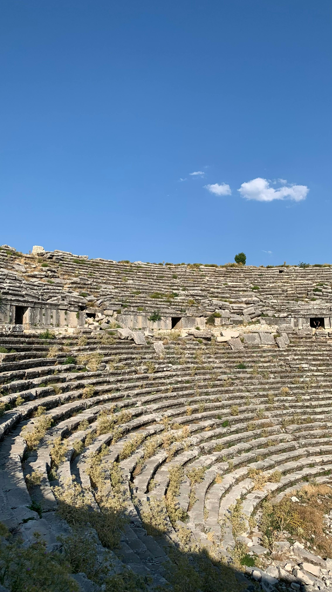
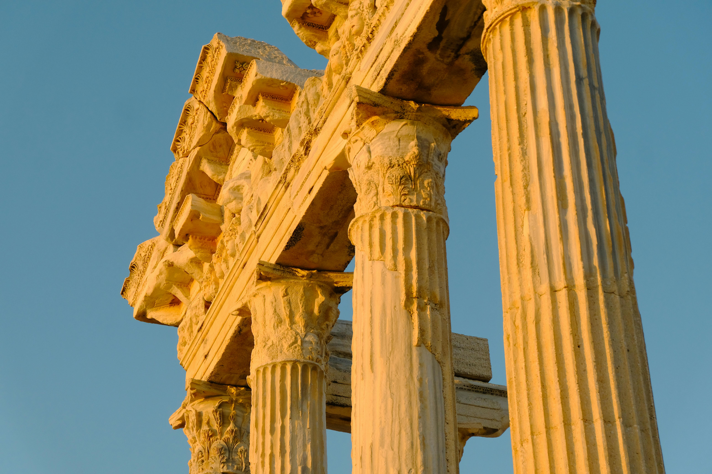
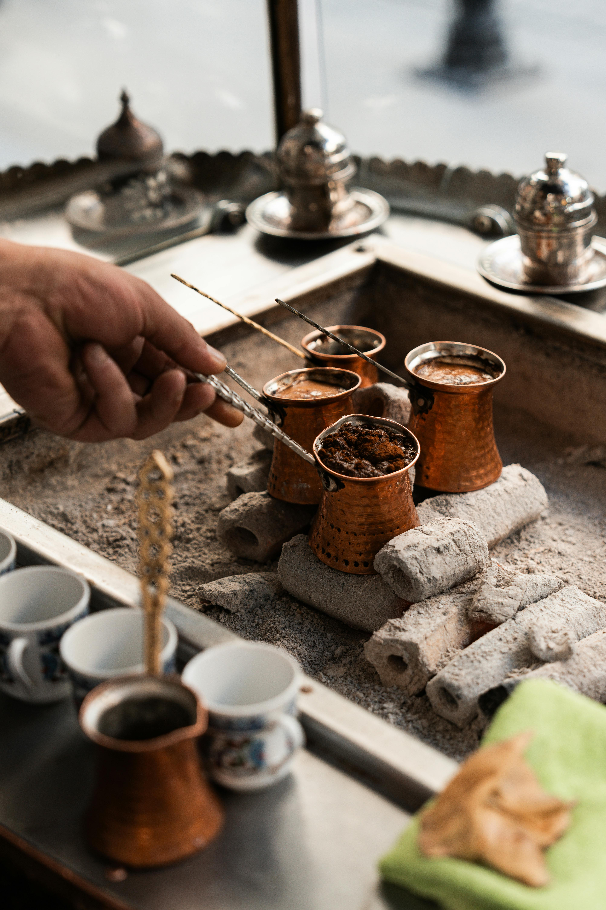

Overview

Turkey is a transcontinental country that bridges Europe and Asia, offering a unique blend of cultures. Renowned for its rich history, stunning landscapes, and diverse cuisine, Turkey attracts millions of visitors each year. From bustling cities to tranquil beaches, there is something for every traveler.
Geography
Turkey is surrounded by three seas: the Aegean Sea to the west, the Mediterranean Sea to the south, and the Black Sea to the north. Its diverse geography includes mountains, plateaus, and beautiful coastlines, making it ideal for various outdoor activities.
History
Turkey has a rich historical tapestry, with its lands once home to numerous civilizations including the Hittites, Phrygians, Urartians, Greeks, Romans, Byzantines, and Ottomans. Key historical sites include Ephesus, Troy, and the ancient city of Cappadocia.
Top Attractions
- Hagia Sophia: A stunning architectural marvel, this former cathedral and mosque is now a museum that showcases the history of Byzantine and Ottoman architecture.
- Cappadocia: Known for its unique rock formations and fairy chimneys, visitors can explore ancient cave dwellings and take hot air balloon rides over the stunning landscape.
- Pamukkale: Famous for its thermal mineral waters and white travertine terraces, Pamukkale is a UNESCO World Heritage site that offers a natural spa experience.
- Blue Mosque: A masterpiece of Ottoman architecture, this mosque is known for its stunning blue tiles and magnificent domes.
- Topkapi Palace: Once the residence of Ottoman sultans, this palace complex now serves as a museum showcasing imperial collections, including the Prophet Muhammad's cloak and sword.
Popular Cities

- Istanbul: A vibrant city where East meets West, known for its historical sites, bustling bazaars, and lively nightlife.
- Ankara: The capital city of Turkey, known for its modern architecture and as a political center.
- Izmir: A beautiful coastal city known for its palm-lined boulevards and historical significance in ancient times.
- Antalya: A resort city on the Mediterranean coast, famous for its stunning beaches and archaeological sites.
- Kayseri: Known for its rich history and culinary scene, especially its manti (Turkish dumplings).
Cuisine
Turkish cuisine is diverse and flavorful, influenced by various regions. Popular dishes include:
- Kebabs: Grilled meat dishes that vary by region, including Adana, Urfa, and Iskender kebabs.
- Baklava: A rich pastry made of layers of filo dough, filled with chopped nuts and sweetened with honey or syrup.
- Mezes: Small dishes served as appetizers, such as hummus, baba ganoush, and stuffed grape leaves.
- Dolma: Stuffed vegetables, often with rice and spices.
- Turkish Tea & Coffee: A staple beverage enjoyed throughout the day, often served in traditional ways.
Outdoor Activities
Turkey offers numerous outdoor activities for adventure seekers:
- Hiking: Trails such as the Lycian Way offer stunning views along the Mediterranean coast.
- Hot Air Ballooning: Experience breathtaking views of Cappadocia's unique landscape from above.
- Water Sports: Enjoy activities like snorkeling, diving, and sailing in the turquoise waters of the Aegean and Mediterranean Seas.
- Skiing: Head to resorts like Uludağ and Palandöken for winter sports.
Travel Tips

- Best time to visit: April to October for warm weather, though spring and fall are ideal for fewer crowds.
- Currency: The official currency is the Turkish Lira (TRY).
- Haggle: Bargaining is common in markets and shops—don’t be afraid to negotiate!
- Respect religious customs: Dress modestly when visiting mosques and follow local customs.
- Learn a few phrases: Basic Turkish phrases can enhance your experience and interactions.